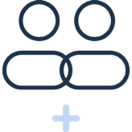

Remplis les champs, le document se complète sous tes yeux. Rien n'est enregistré : l'ordonnance est fabriquée dans ton navigateur et n'en sort jamais.
Ordonnance
Identification de l'infirmier·ère
Prénom & Nom :
Coordonnées :
Numéro RPPS :
Identification du patient
Prénom & Nom :
Date de naissance :
Numéro SS :
En rapport avec ALD
Renouvelable
Prescription

remplacare
Fait à :
le :
Signature :
Tu es infirmier·ère remplaçant·e ?
RemplaCare suit ton calendrier, ton chiffre d'affaires et ce que tu dois provisionner. Découvrir